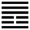

Thiên Lôi Vô Vọng (無妄 wú wàng)
Đã trở lại thiên lý, chính đạo rồi thì không làm càn nữa, cho nên sau quẻ Phục, tới quẻ Vô vọng. Vọng có nghĩa là càn, bậy.
Thoán từ:
无妄: 元亨, 利貞. 其匪正有眚, 不利有攸往．
Vô vọng: Nguyên hanh, lợi trinh.
Kì phỉ chính hữu sảnh, bất lợi hữu du vãng.
Dịch: không càn bậy thì rất hanh thông, hợp với chính đạo thì có lợi. Cái gì không hợp với chính đạo thì có hại, có lỗi, hành động thì không có lợi.
Giảng: Tượng quẻ này: nội quái là Chấn (nghĩa là động, hành động); ngoại quái là Càn (trời), hành động mà hợp với lẽ trời thì không càn bậy, không càn bậy thì hanh thông, có lợi.
Thoán truyện giảng rõ thêm:
Nội quái nguyên là quẻ Khôn, mà hào 1, âm biến thành dương, thành quẻ Chấn. Thế là dương ở ngoài tới làm chủ nội quái, mà cũng làm chủ cả quẻ vô vọng, vì ý chính trong Vô vọng là: động, hành động. Động mà cương kiên như ngoại quái Càn, tức là không càn bậy.
Xét về các hào thì hào 5 dương cương, trung chính ứng, ứng với hào 2 cũng trung chính, thế là hợp với thiên lý, rất hanh thông.
Ở thời Vô vọng (không càn bậy) mình không giữ chính đạo mà đi thì đi đâu được? Chữ đi (vãng) ở đây nghĩa rộng là hành động (nguyên văn: Vô vọng chi vãng, hà chi hĩ? Nên hiểu là : vô vọng: phỉ chính chi vãng, hà chi hĩ; chữ chi thứ nhì này có nghĩa là đi). Trái lẽ trời thì trời không giúp, làm sao đi được ?
Đại tượng truyện bàn thêm về cái đạo của trời (đất) là nuôi nấng, và thánh nhân cũng theo đạo đó mà nuôi nấng vạn dân. Chúng tôi cho là ra ngoài đề.
Ý nghĩa các hào:
1.
初九: 无妄, 往吉．
Sơ cửu: vô vọng, vãng cát.
Dịch: Hào 1, dương: không còn bậy, mà tiến đi thì tốt.
Giảng: Hào này dương cương, làm chủ nội quái, là người có đức, cho nên khen như vậy.
2.
六二: 不耕穫, 不菑畬, 則利有攸往．
Lục nhị: Bất canh hoạch, bất tri dư, tắc lợi hữu du vãng.
Dịch: Khi cày thì không nghĩ tới lúc gặt, khi mới khai phá (tri) thì không nghĩ đến ruộng đã thuộc (dự), như vậy mà tiến tới thì có lợi.
Giảng: Lời hào này quá vắn tắt, hơn điện tín ngày nay nữa, nên tối nghĩa, có nhiều sách cứ dịch từng chữ; không thông.
Chu công muốn bảo: Khi cày mà không nghĩ tới lúc gặt, khi mới khai phá mà không nghĩ tới khi ruộng đã thuộc, có nghĩa là thấy việc chính đáng phải làm thì làm mà không nghĩ đến cái lợi rồi mới làm, không chỉ trông mong vào kết quả, như vậy mới tốt.
Hào 2, âm, vừa trung vừa chính, ứng với hào 5 cũng trung chính; nó vốn là âm có đức thuận ở trong nội quái Chấn là động, như một người tốt hành động hợp với trung, chính, cho nên Hào từ bảo như vậy mà tiến thì có lợi.
Có lẽ chính vì ý nghĩa hào này mà Sử ký của Tư Mã Thiên chép tên quẻ là 无 望 (vô vọng :không mong) với nghĩa làm điều phải mà “không mong” có lợi, có kết quả. Hiểu như vậy cũng được.
3.
六三: 无妄之災, 或繫之牛, 行人之得, 邑人之災．
Lục tam: vô vọng chi tai, hoặc hệ chi ngưu,
Hành nhân chi đắc, ấp nhân chi tai.
Dịch: Hào 3, âm: không còn bậy mà bị tai vạ tự nhiên đến như có kẻ cột con bò ở bên đường (rồi bỏ đi chỗ khác), một người đi qua (thấy bò không có ai coi), dắt trộm đi, được bò, mà người trong ấp bị nghi oan là lấy trộm bò, mà mắc họa.
Giảng: cả 6 hào trong quẻ này đều là không càn bậy, nhưng hào này khác một chút là bất trung, bất chính, nên bị tai vạ; tai vạ đó chỉ là vô cớ mà mắc.
4.
九四: 可貞,无咎．
Cửu tứ: khả trinh, vô cữu.
Dịch: Hào 4, dương: nên giữ vững tư cách thì không có lỗi (hoặc: có thể giữ vững được tư cách, cho nên không có lỗi).
Giảng: chữ “Trinh” có hai nghĩa: chính đáng và bền. Ở đây nên hiểu là bền. Hào 4 này dương, không ứng hợp với hào nào cả. (vì hào 1 cũng là dương cương như nó), không nên họat động, nhưng nó cương kiện, có thể giữ vững được tư cách.
5.
九五: 无妄之疾, 勿藥, 有喜．
Cửu ngũ: vô vọng chi tật, vật dược, hữu hỉ.
Dịch: Hào 5, dương: Không càn bậy mà vô cớ bị bệnh (gặp tai họa) thì đừng uống thuốc, sẽ hết bệnh.
Giảng: Hào này ở địa vị cao, trung chính lại ứng với hào 2 cũng trung chính, vậy là rất tốt, chẳng may có bị bệnh (gặp tai họa) thì đừng uống thuốc (nghĩa bóng là đừng chạy chọt gì cả, cứ thản nhiên như Khổng tử khi bị giam ở đất Khuông) rồi sẽ tai qua nạn khỏi (như Khổng tử sau được thả ra, vì người Khuông nhận là rằng họ lầm ông với Dương Hổ, một người mà họ ghét.)
6.
上九: 无妄, 行有眚, 无攸利．
Thượng cửu: Vô vọng, hành hữu sảnh, vô du lợi.
Dịch: Hào trên cùng, dương. Không càn bậy, nhưng đi (hành động) thì bị họa, không lợi gì.
Giảng: Hào từ khuyên không nên hành động, mặc dầu vẫn là “vô vọng”, chỉ vì hào này tới cuối cùng của quẻ rồi, chỉ nên yên lặng chờ thời.